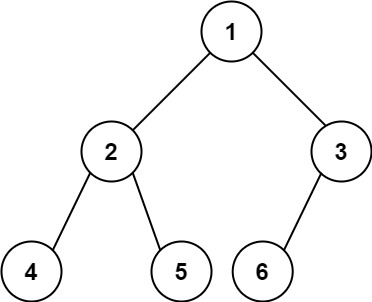

222. 完全二叉树的节点个数
| 题目信息 | 内容 |
|---|---|
| 难度 | 中等 |
| 核心模式 | 利用完全二叉树性质：左右高度相等即满二叉树，直接公式计数 |
| 时间复杂度 | O(log²n) |
| 空间复杂度 | O(log n) |
题目与约束
给你一棵 完全二叉树 的根节点 root ，求出该树的节点个数。
完全二叉树 的定义如下：在完全二叉树中，除了最底层节点可能没填满外，其余每层节点数都达到最大值，并且最下面一层的节点都集中在该层最左边的若干位置。若最底层为第 h 层（从第 0 层开始），则该层包含 1~ 2h 个节点。
示例 1：

输入：root = [1,2,3,4,5,6]
输出：6
示例 2：
输入：root = []
输出：0
示例 3：
输入：root = [1]
输出：1
提示：
-
树中节点的数目范围是
[0, 5 * 104] -
0 <= Node.val <= 5 * 104 -
题目数据保证输入的树是 完全二叉树
进阶：遍历树来统计节点是一种时间复杂度为 O(n) 的简单解决方案。你可以设计一个更快的算法吗？
核心不变量
对任意节点，若沿着最左链与最右链得到的层数相等，则它是一棵满二叉树，节点数直接是
2^h - 1。
完整推导
思路推导
-
直觉与痛点：直接 DFS/BFS 数节点是 O(n)，没有利用"完全二叉树"这一宝贵性质。完全二叉树的结构几乎被"填满"，大部分子树其实都是满二叉树。
-
破局思路（高度判满）：对当前节点，分别沿最左走到底得到左高度
lh，沿最右走到底得到右高度rh（都以"经过的节点层数"计）。 - 若lh == rh：说明这棵子树是满二叉树，节点数 =2^lh - 1，可 O(1) 直接算，无需再往下递归。 - 若lh != rh：说明不是满的，只能拆成1 + 左子树 + 右子树继续递归。 -
为什么快：每层递归最多只有一侧会"不相等"继续展开，而每次计算高度是 O(log n)，整体为 O(log²n)，远优于 O(n)。
小例子：root = [1,2,3,4,5,6]（节点 4、5、6 是叶子，其中 6 是节点 3 的左孩子、节点 3 无右孩子）。根的最左链是 1-2-4（3 层），最右链是 1-3（2 层），故 lh = 3、rh = 2，lh != rh，根不是满二叉树，需拆成左右子树分别递归判定，最终正确累计为 6。
Java 实现（高度判满递归）
class Solution {
public int countNodes(TreeNode root) {
if (root == null) return 0;
int lh = leftHeight(root);
int rh = rightHeight(root);
if (lh == rh) {
// 满二叉树：节点数 = 2^lh - 1
return (1 << lh) - 1;
}
// 非满：根 + 左右子树
return 1 + countNodes(root.left) + countNodes(root.right);
}
// 沿最左链走到底，返回层数
private int leftHeight(TreeNode node) {
int h = 0;
while (node != null) { h++; node = node.left; }
return h;
}
// 沿最右链走到底，返回层数
private int rightHeight(TreeNode node) {
int h = 0;
while (node != null) { h++; node = node.right; }
return h;
}
}
复杂度
- 时间：O(log²n)，每层递归花 O(log n) 算高度，递归深度 O(log n)。
- 空间：O(log n)，递归栈深度等于树高。
易错点与扩展（面试高频考点）
- 高度含义要统一：本实现用"层数"（根为 1 层）计高度，公式是
2^h - 1；若用"边数"计高度，公式则变2^(h+1)-1，务必自洽。 1 << h的范围：h约为log2(n) ≤ 16，int足够，不会溢出。- 必须左右都判：只看左高度或只看某一侧会误判非满子树为满树，导致答案偏小。
- 进阶解法（位运算 + 二分）：先求树的层数 h，对最底层做二分查找"有多少个节点"，用节点编号的二进制位从高到低走位判断该位置是否存在，复杂度 O(log²n)，与上述方法同阶，也是标签里 Bit Manipulation / Binary Search 的出处。
- 普适性：该"高度判满"技巧只能在完全二叉树上省时；对一般二叉树仍需 O(n) 遍历。
力扣原题
C++ 实现
#include <algorithm>
using namespace std;
class Solution {
int leftHeight(TreeNode* node) {
int h = 0;
while (node) { h++; node = node->left; }
return h;
}
int rightHeight(TreeNode* node) {
int h = 0;
while (node) { h++; node = node->right; }
return h;
}
public:
int countNodes(TreeNode* root) {
if (!root) return 0;
int lh = leftHeight(root);
int rh = rightHeight(root);
if (lh == rh) return (1 << lh) - 1; // 满二叉树
return 1 + countNodes(root->left) + countNodes(root->right);
}
};
Python 实现
class Solution:
def countNodes(self, root: "Optional[TreeNode]") -> int:
if not root:
return 0
def left_height(node):
h = 0
while node:
h += 1
node = node.left
return h
def right_height(node):
h = 0
while node:
h += 1
node = node.right
return h
lh = left_height(root)
rh = right_height(root)
if lh == rh:
return (1 << lh) - 1 # 满二叉树，2^lh - 1
return 1 + self.countNodes(root.left) + self.countNodes(root.right)